Vietnam
Vietnam
La ruta de Vietnam: 3 regiones, 12 monumentos. Cada monumento se construye en tres fases.
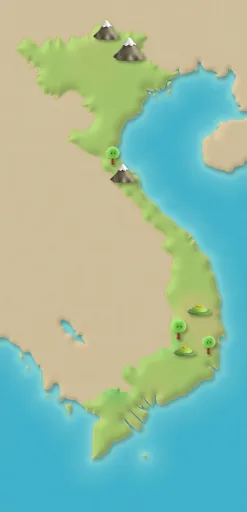
Sa Pa
Pasos de ruta 1–12
Terrazas de arroz
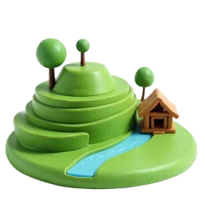
Fase 1 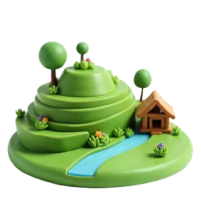
Fase 2 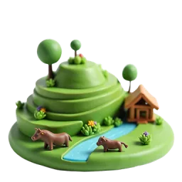
Fase 3 El valle de Mường Hoa, entre Sa Pa y el monte Fansipan, es famoso por sus arrozales en terrazas, como escalones. Fuente: Wikipedia
Teleférico del monte Fansipan
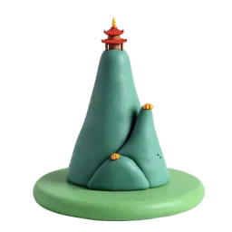
Fase 1 Fase 2 Fase 3 Con 3147 metros, el Fansipan es la montaña más alta de Indochina; por eso lo llaman el ‘Techo de Indochina’. Fuente: Wikipedia
Aldea Cát Cát
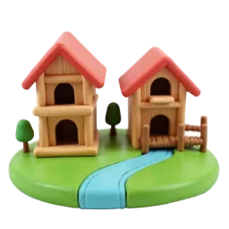
Fase 1 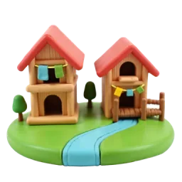
Fase 2 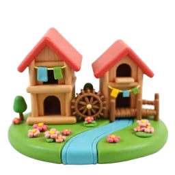
Fase 3 Cát Cát es una aldea hmong fundada a mediados del siglo XIX. Sus vecinos tejen telas de colores teñidas con índigo. Fuente: Wikipedia
Cascada de Plata
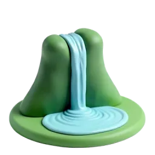
Fase 1 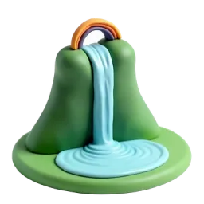
Fase 2 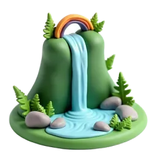
Fase 3 La Cascada de Plata mide más de 200 metros. Su nombre viene de la espuma blanca del agua al caer. Fuente: Wikipedia
Hanói
Pasos de ruta 13–24
Lago Hoàn Kiếm y Torre de la Tortuga
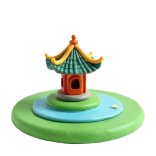
Fase 1 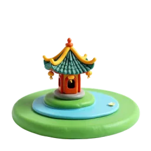
Fase 2 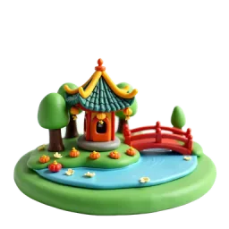
Fase 3 Su nombre significa ‘lago de la espada devuelta’. Según la leyenda, una tortuga dorada recuperó aquí la espada mágica del emperador Lê Lợi. Fuente: Wikipedia
Puente Huc
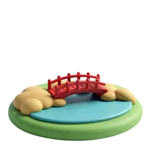
Fase 1 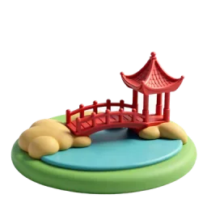
Fase 2 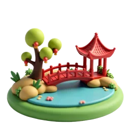
Fase 3 El puente se construyó en 1865 para llegar al templo Ngọc Sơn. Su nombre significa ‘el sol que sale y se posa’. Fuente: Wikipedia
Templo de la Literatura
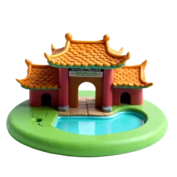
Fase 1 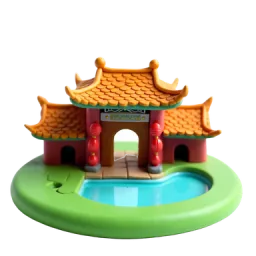
Fase 2 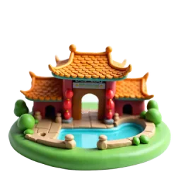
Fase 3 Fundado en 1070, el templo albergó desde 1076 la primera universidad nacional de Vietnam, la Academia Imperial. Fuente: Wikipedia
Calles del Barrio Antiguo
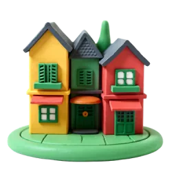
Fase 1 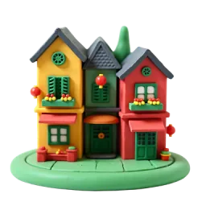
Fase 2 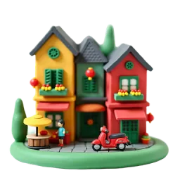
Fase 3 El Barrio Antiguo también se llama ‘las 36 calles’. Antes, cada calle tenía su propio oficio o comercio. Fuente: Wikipedia
Bahía de Hạ Long
Pasos de ruta 25–36
Islas de piedra caliza
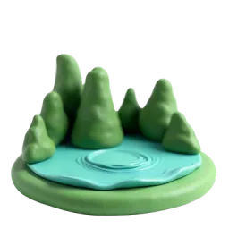
Fase 1 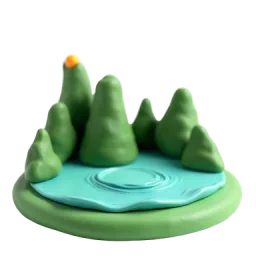
Fase 2 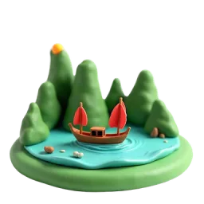
Fase 3 La bahía de Hạ Long tiene unos 1969 islotes, casi todos de piedra caliza. Es Patrimonio de la UNESCO desde 1994. Fuente: Wikipedia
Junco tradicional
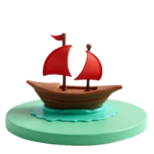
Fase 1 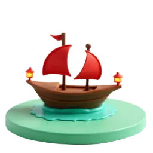
Fase 2 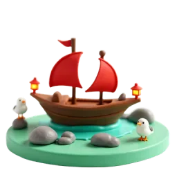
Fase 3 Los juncos tienen fondo plano y el casco dividido en compartimentos estancos. Sus velas se tejían con bambú. Fuente: Wikipedia
Cueva Sửng Sốt
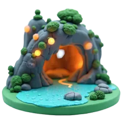
Fase 1 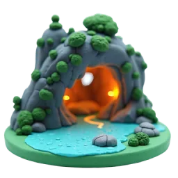
Fase 2 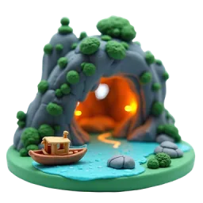
Fase 3 La entrada de la cueva es pequeña, pero dentro se abre enorme. En 1901 los franceses la llamaron ‘Cueva de la Sorpresa’. Fuente: Wikipedia
Aldea flotante de pescadores
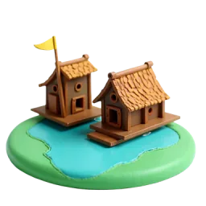
Fase 1 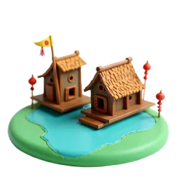
Fase 2 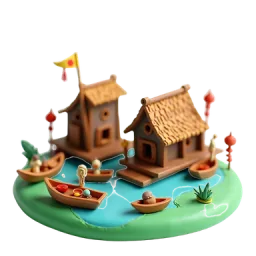
Fase 3 Unas 1600 personas viven en cuatro aldeas pesqueras de la bahía de Hạ Long, en casas flotantes, y viven de la pesca. Fuente: Wikipedia